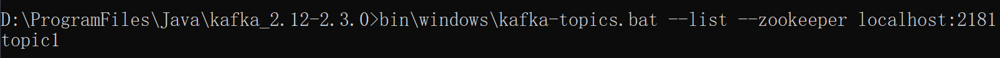
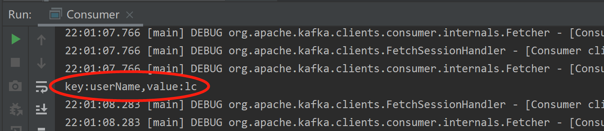

Kafka的结构与RabbitMQ类似，消息生产者向Kafka服务器发送消息，Kafka接收消息后，再投递给消费者。
生产者的消费会被发送到Topic中，Topic中保存着各类数据，每一条数据都使用键、值进行保存。
每一个Topic中都包含一个或多个物理分区（Partition），分区维护着消息的内容和索引，它们有可能被保存在不同服务器。
新建一个Maven项目，pom.xml 加入依赖：
<dependency>
<groupId>org.apache.kafka</groupId>
<artifactId>kafka-clients</artifactId>
<version>2.3.0</version>
</dependency>1、编写生产者
将消息投递到Kafka服务器的名称为“topic1”的Topic中
package com.example.kafkatest;
import org.apache.kafka.clients.producer.KafkaProducer;
import org.apache.kafka.clients.producer.ProducerRecord;
import org.apache.kafka.common.serialization.StringSerializer;
import java.util.Properties;
public class Producer {
public static void main(String[] args) {
//配置信息
Properties props = new Properties();
//kafka服务器地址
props.put("bootstrap.servers", "localhost:9092");
//设置数据key和value的序列化处理类
props.put("key.serializer", StringSerializer.class);
props.put("value.serializer", StringSerializer.class);
//创建生产者实例
KafkaProducer<String,String> producer = new KafkaProducer<>(props);
ProducerRecord record = new ProducerRecord<String, String>("topic1", "userName", "lc");
//发送记录
producer.send(record);
producer.close();
}
}运行后，可打开命令行工具，进入Kafka目录，执行命令查询服务器的Topic：
bin\windows\kafka-topics.bat --list --zookeeper localhost:2181结果如下：

2、编写消费者
本例中，消费者和生产者在同一个项目中，只是使用不同的启动类。
消费者会为自已指定一个消费者组的标识，每一条发布到Topic的记录，都会被交付给消费者组的一个消费者实例。
如果多个消费者实例有相同的消费者组，则这些记录会分配到各个消费者实例上，以达到负载均衡的目录。
如果所有的消费者有不同的消费者组，则每一条记录都会广播到全部的消费者进行处理。
package com.example.rabbittest;
import org.apache.kafka.clients.consumer.ConsumerRecord;
import org.apache.kafka.clients.consumer.ConsumerRecords;
import org.apache.kafka.clients.consumer.KafkaConsumer;
import org.apache.kafka.common.serialization.StringDeserializer;
import java.time.Duration;
import java.util.Arrays;
import java.util.Properties;
public class Consumer {
public static void main(String[] args) {
//配置信息
Properties props = new Properties();
//kafka服务器地址
props.put("bootstrap.servers", "localhost:9092");
//必须指定消费者组
props.put("group.id", "test");
//设置数据key和value的序列化处理类
props.put("key.deserializer", StringDeserializer.class);
props.put("value.deserializer", StringDeserializer.class);
//创建消息者实例
KafkaConsumer<String,String> consumer = new KafkaConsumer<>(props);
//订阅topic1的消息
consumer.subscribe(Arrays.asList("topic1"));
//到服务器中读取记录
while (true){
ConsumerRecords<String,String> records = consumer.poll(Duration.ofMillis(100));
for(ConsumerRecord<String,String> record : records){
System.out.println("key:" + record.key() + "" + ",value:" + record.value());
}
}
}
}运行后，IDEA控制台其中输出如下：
